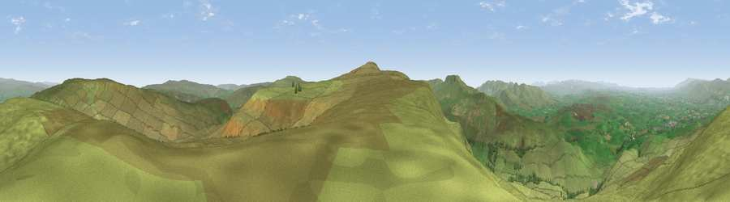

High Pike Hill
#2751 in England · top 3% of its area beats it · near NatebyWhere it is
The exact computed spot (NY 80325 03262). Click the marker for map links.
The view, rendered

A 360° render of this exact spot computed from the terrain model, tree cover and land cover — summer colours, afternoon light, calibrated against photographs of famous viewpoints. Real trees, hedges and buildings will differ in detail.
The panorama
Grey silhouette: terrain skyline in each direction (720 bearings, Earth curvature and refraction included). Dashed green: skyline with trees (+15 m) and buildings (+8 m) as obstacles. Blue strip: how far the ground is visible on each bearing.
Where the view opens
Wedge length = distance to the farthest visible ground on that bearing (vegetation-aware). Rings at 10, 25 and 50 km.
What fills the view
98% grassland · 2% woodland
Angular shares of the visible panorama (visual magnitude), not map area. Landscape diversity 0.06 (0–1 Shannon).
Key numbers
More beautiful places nearby
The staircase of upgrades: each row has a higher view potential than everything closer. Driving times are estimates from straight-line distance, calibrated against real road routing — check an actual route before setting out.
| Place | Direction | Drive | Score |
|---|---|---|---|
| Viewpoint near Nateby | N · 0 km | ~1 min | 75.0 |
| Viewpoint near Nateby | SSW · 2 km | ~4 min | 75.7 |
| Viewpoint c10024_7603 | S · 2 km | ~5 min | 76.9 |
| Calders | WSW · 15 km | ~27 min | 79.0 |
| Calf Top | SW · 22 km | ~37 min | 79.8 |
| Crag Hill | SSW · 23 km | ~38 min | 80.0 |
| Viewpoint near Bampton | WNW · 35 km | ~53 min | 80.4 |
| Ill Bell | W · 37 km | ~56 min | 80.9 |
54.42441, -2.30475 · source: osm peak · position refined by local search. Computed location — check access rights before visiting.